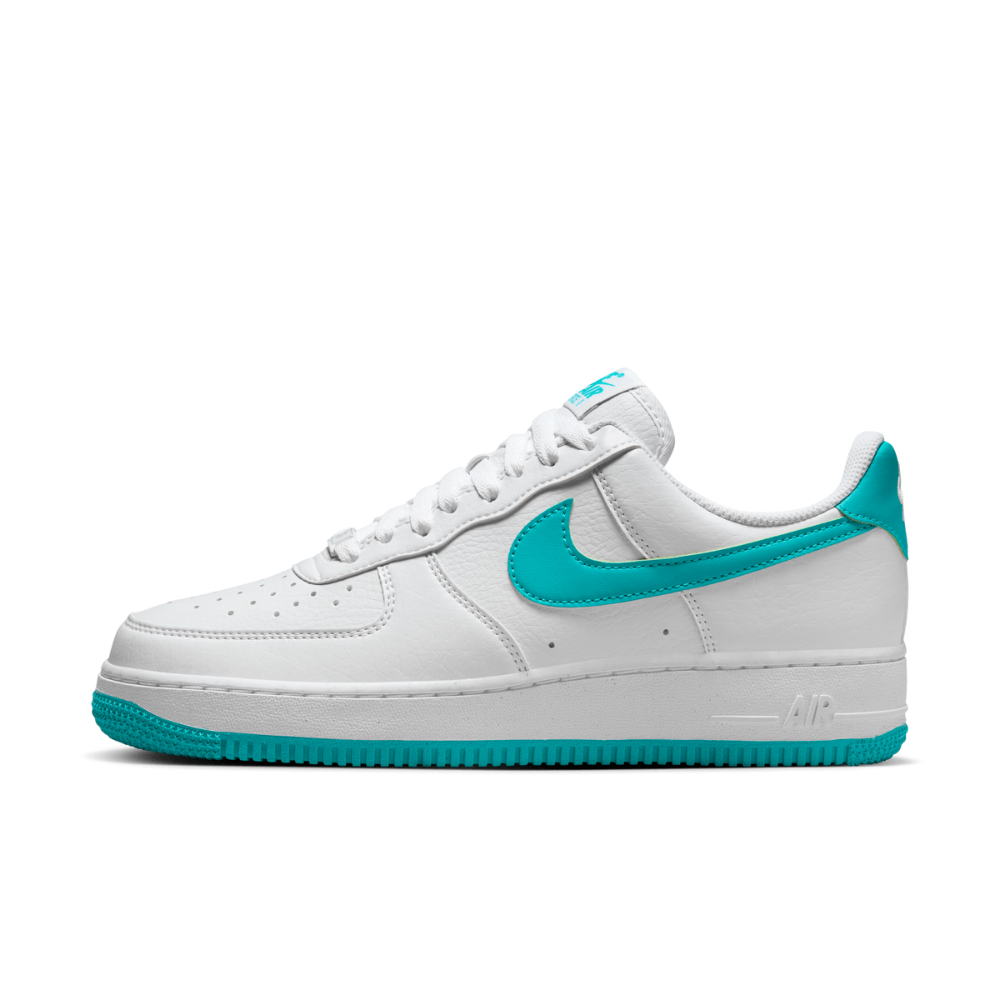

NIKE AIR FORCE 1'07 NEXT NATURE

Precio:$119.990
Marca: Nike
Color: Blanco
Tallas Disponibles: 6, 7, 7.5, 8, 9, 9.5, 10 US
Descripción: Zapatillas para mujer Este original calzado de básquetbol le da a "aire fresco" un significado completamente nuevo. La lona ventilada, un conjunto de colores primaverales y detalles bordados aportan sensaciones veraniegas a lo que ya conoces y amas: amortiguación Air, confección clásica y estilo durante días.